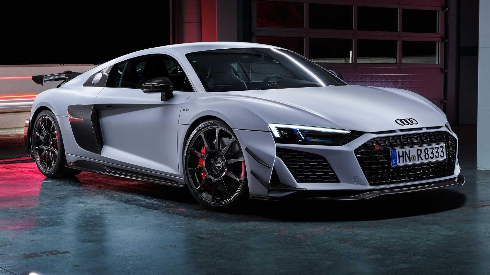

Audi R8 е суперспортен автомобил, вдъхновен от моторните спортове и технологиите от пистата.
Моделът предлага изключително изживяване, съчетаващо дизайн, мощност и прецизност.
| Параметър | Стойност |
|---|---|
| Двигател | 5.2 V10 FSI |
| Мощност | 570–620 к.с. |
| Въртящ момент | 550–580 Nm |
| Ускорение 0–100 km/h | 3.1 сек |
| Максимална скорост | 330 km/h |
| Трансмисия | 7-степенна S-Tronic |
| Задвижване | quattro AWD / RWD |
| Разход на гориво | 13–14.5 л/100 км |